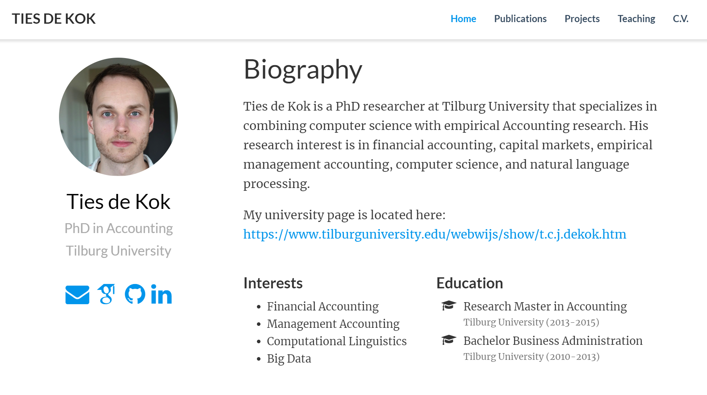
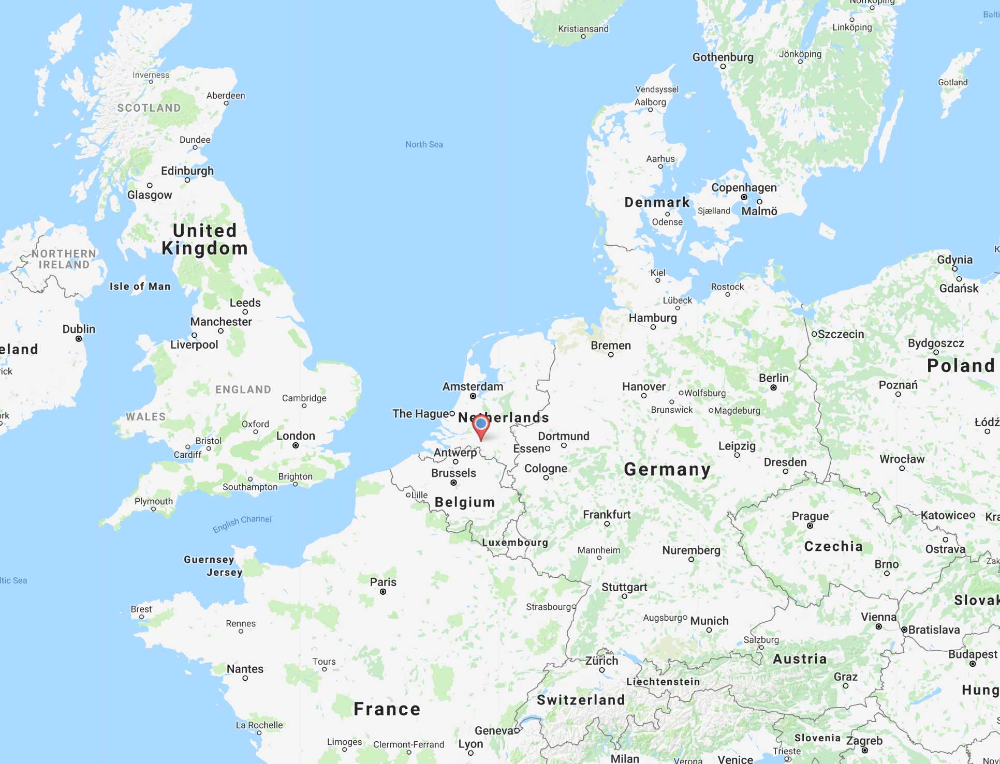
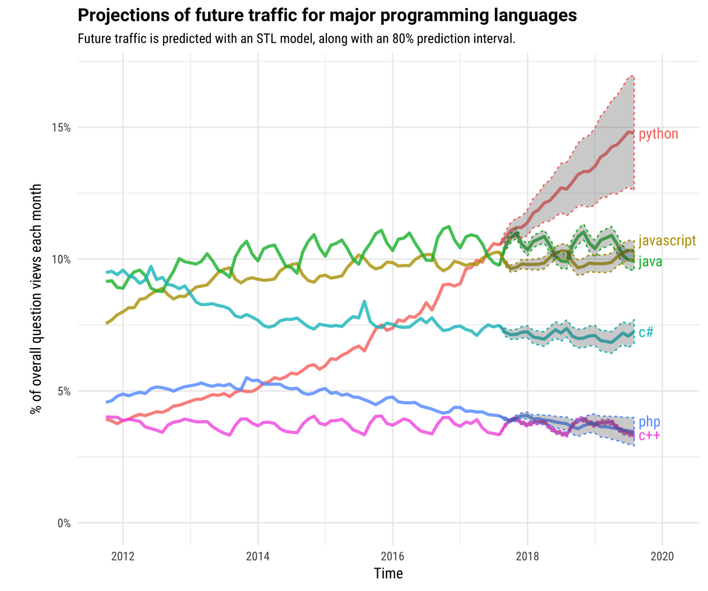
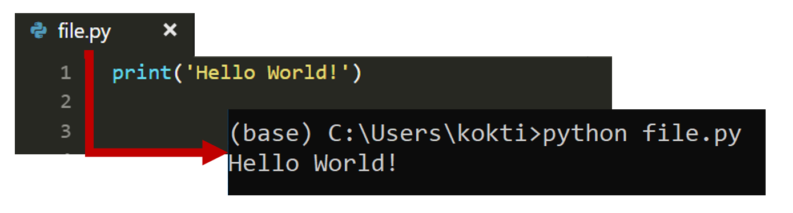
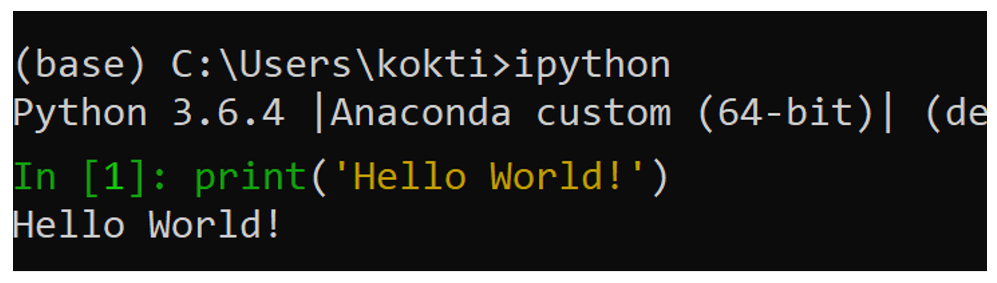
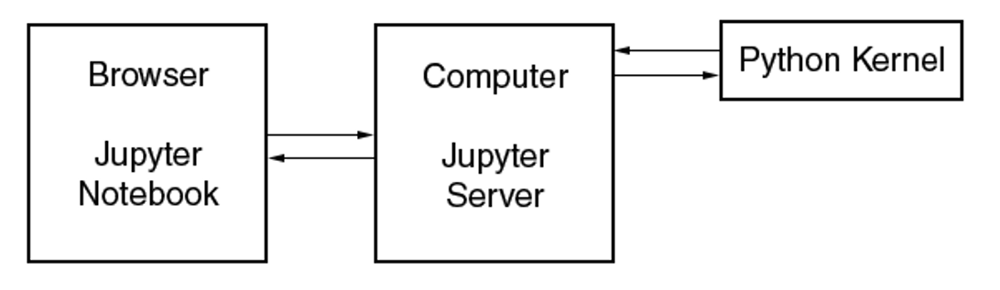
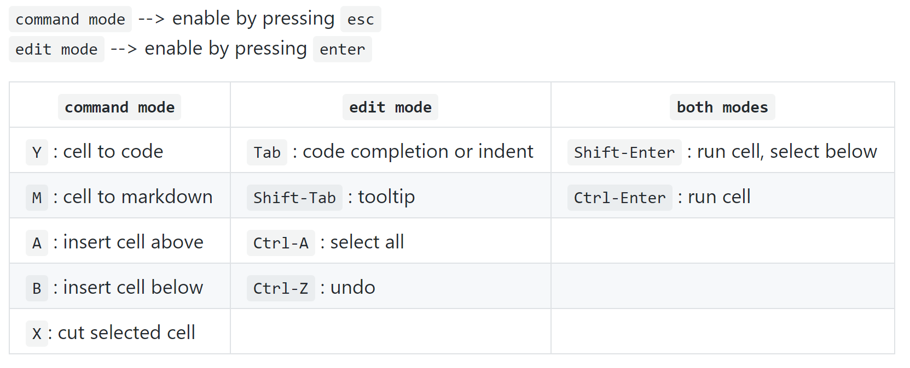
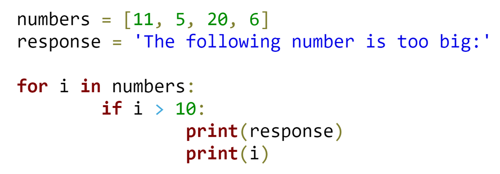
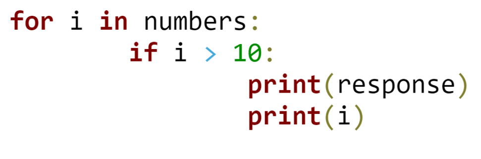
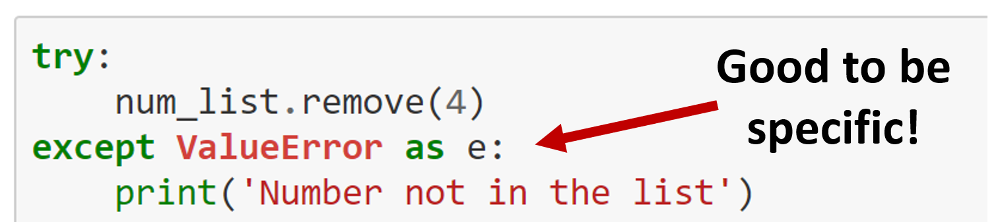

class: center, titleslide <br><br> # Python Workshop: # Introduction <br> ## <a href="http://www.tiesdekok.com" target="_blank">Ties de Kok</a> ## Tilburg University --- layout: true class: mainlayout <div class='custom_footer'><span>Python Workshop | Introduction | Ties de Kok (© 2018)</span></div> --- class: tocslide .left-column[ ## About me ] .right-column[  ] --- class: tocslide .left-column[ ## About me ] .right-column[  ] --- class: tocslide .left-column[ ## About me ## Program ] .right-column[ ### What will we be doing? <span style="display: block; padding-top: 5px"></span> **Six sessions:** <span style="display: block; padding-top: 5px"></span> 1) Introduction to Python (+ Python worfklow) <span style="display: block; padding-top: 5px"></span> 2) Handling data with `Pandas` <span style="display: block; padding-top: 5px"></span> 3) Gathering data from the web <span style="display: block; padding-top: 5px"></span> 4) Natural Language Processing <span style="display: block; padding-top: 5px"></span> 5) EDGAR walkthrough <span style="display: block; padding-top: 5px"></span> 6) Miscellaneous topics <span style="display: block; padding-top: 5px"></span> ] --- class: tocslide .left-column[ ## About me ## Program ## Basic<br>Principles ] .right-column[ <span style="display: block; padding-top: 1px"></span> ### Basic Principles of this course: <span style="display: block; padding-top: 1px"></span> 1) I cannot inject you with Python skills 2) **It is up to you to make yourself proficient with Python** ] -- .right-column-next[ <span style="display: block; padding-top: 5px"></span> ### My goal: <span style="padding-left: 20px" class="arrow-right"></span><span>Make it more efficient for you to **teach Python to yourself**</span> ] -- .right-column-next[ <span style="display: block; padding-top: 5px"></span> ### How? 1. By providing starting points 2. By pointing out common pitfalls ] --- class: tocslide .left-column[ ## About me ## Program ## Basic<br>Principles ## Structure ] .right-column[ <span style="display: block; padding-top: 1px"></span> ### Structure: **Each session consists of three elements:** <span style="display: block; padding-top: 2px"></span> 1) Conceptual introduction <span style="padding-left: 20px" class="arrow-right"></span> Introduce basic constructs and terminology 2) Demonstration <span style="padding-left: 20px" class="arrow-right"></span> Demonstrate how I interact with the tools and write code 3) Mini-task <span style="padding-left: 20px" class="arrow-right"></span> Get hands-on experience ] --- class: tocslide .left-column[ ## About me ## Program ## Basic<br>Principles ## Structure ## Materials ] .right-column[ <span style="display: block; padding-top: 15px"></span> ### Slides: All of the slides are made available here: <a href='https://github.com/TiesdeKok/UW_Python_Camp'> GitHub page</a> <span style="display: block; padding-top: 5px"></span> ### Python materials: <span style="display: block; padding-top: 5px"></span> All materials are available here: 1) <a href='https://github.com/TiesdeKok/LearnPythonforResearch'> Learn Python for Research (GitHub)</a> 2) <a href='https://github.com/TiesdeKok/Python_NLP_Tutorial'> Natural Language Processing (NLP) Tutorial (GitHub)</a> ] --- class: tocslide .left-column[ ## About me ## Program ## Basic<br>Principles ## Structure ## Materials ## Agenda ] .right-column[ ### Agenda <span style="display: block; padding-top: 2px"></span> 1. Why Python? 2. Python eco-system 3. Using Python 4. Jupyter Notebook 5. Python syntax ] --- class: tocslide .left-column[ ## Why<br>Python? ] .right-column[  <span style='font-size: 14pt; position: relative; bottom: 10px;'><i>(Source: https://stackoverflow.blog/2017/09/06/incredible-growth-python/)</i></span> ] --- class: tocslide .left-column[ ## Why<br>Python? ## Python<br>Eco-system ] .right-column[ <span style="display: block; padding-top: 2px"></span> ### Python 2 vs. Python 3: <span style="display: block; padding-top: 2px"></span> <span style="padding-left: 20px" class="arrow-right"></span> Simple: always use Python 3 unless you have to use Python 2. Python 3 receives new updates, Python 2.7 is slowly phased out. <span style="display: block; padding-top: 2px"></span> **Note!** Python 3 syntax is not always backwards compatible! <span style="display: block; padding-top: 2px"></span> `print 'Hello, world!'` <span style="padding-left: 20px" class="arrow-right"></span>Only works in Python 2.7 `print('Hello, world!')` <span style="padding-left: 20px" class="arrow-right"></span>Works in Python 2.7 and Python 3.X <span style="display: block; padding-top: 2px"></span> ### We will use Python 3.6 ] --- class: tocslide .left-column[ ## Why<br>Python? ## Python<br>Eco-system ] .right-column[ <span style="display: block; padding-top: 2px"></span> ### Modules and packages A module/package is Python code that you "import" to add functionality. **Two types of modules/packages:** 1. Build-in modules that are included with Python 2. Third-party modules/packages <span style="padding-left: 20px" class="arrow-right"></span> The Python Package Index hosts more than 130,000 packages! **Example:** `import os` <span style="padding-left: 20px" class="arrow-right"></span> Standard module `import pandas as pd` <span style="padding-left: 20px" class="arrow-right"></span> Third-party module ] --- class: tocslide .left-column[ ## Why<br>Python? ## Python<br>Eco-system ] .right-column[ <span style="display: block; padding-top: 2px"></span> ### Modules and packages **How to install third-party modules/packages?** Use `pip` to install packages hosted on the Python Package Index Use `conda` to install packages hosted by `Anaconda` or `Conda-Forge` <span style="display: block; padding-top: 5px"></span> ] -- .right-column-next[ ### Recommendation: <span style="padding-left: 20px" class="arrow-right"></span> always start with the default Anaconda 3 distribution! **Anaconda:** Python bundled with most used data science packages. <span style="display: block; padding-top: 2px"></span> **For more info:** <a href="https://www.anaconda.com/what-is-anaconda/">Anconda Distribution website</a> ] --- class: tocslide .left-column[ ## Why<br>Python? ## Python<br>Eco-system ## Using<br>Python ] .right-column[ ### How to run Python code? <span style="display: block; padding-top: 2px"></span> 1) Save code to `.py` file and run from command line: `python file.py`  2) Use an interactive console in the command line: `python` or `ipython`  <span style="padding-left: 20px" class="arrow-right"></span> **3) Use Jupyter Notebooks!** ] --- class: tocslide .left-column[ ## Why<br>Python? ## Python<br>Eco-system ## Using<br>Python ## Jupyter<br>Notebook ] .right-column[ ### Jupyter Notebook <div style="text-align: center;"> <img style="position: relative; top: 0px; left: 0px; bottom:-50px;" src="images/Jupyter_Screenshot.PNG", width=90%> <a class="orange-button" href="https://try.jupyter.org/" target="_blank">Try it in your browser</a> </div> ] --- class: tocslide .left-column[ ## Why<br>Python? ## Python<br>Eco-system ## Using<br>Python ## Jupyter<br>Notebook ] .right-column[ ### Jupyter Notebook <img style="position: relative; top: 0px; left: 0px;" src="images/basic_instructions.gif", width=105%> ] --- class: tocslide .left-column[ ## Why<br>Python? ## Python<br>Eco-system ## Using<br>Python ## Jupyter<br>Notebook ] .right-column[ ### Jupyter Notebook #### How does it work:  **How to start:** 1. Open up a command line / terminal 2. Change to project directory using `cd` 3. Type: `jupyter notebook` **How to stop:** <span style="padding-left: 20px" class="arrow-right"></span> Press `ctrl+c` in command line / terminal ] --- class: tocslide .left-column[ ## Why<br>Python? ## Python<br>Eco-system ## Using<br>Python ## Jupyter<br>Notebook ] .right-column[ ### Jupyter Notebook Using a Jupyter Notebook is largely self-explanatory. <span style="display: block; padding-top: 1px"></span> **Most relevant shortcuts for reference purposes:** <span style="display: block; padding-top: 2px"></span>  ] --- class: tocslide .left-column[ ## Why<br>Python? ## Python<br>Eco-system ## Using<br>Python ## Jupyter<br>Notebook ## Python<br>syntax ] .right-column[ ### Python syntax is (relatively) easy! <span style="display: block; padding-top: 2px"></span>  ] -- .right-column-next[ ### Where to start? <span style="padding-left: 20px" class="arrow-right"></span> I recommend to use my <a href="https://nbviewer.jupyter.org/github/TiesdeKok/LearnPythonforResearch/blob/master/0_python_basics.ipynb">Python Basics Notebook</a> <span style="display: block; padding-top: 2px"></span> ] --- class: tocslide .left-column[ ## Why<br>Python? ## Python<br>Eco-system ## Using<br>Python ## Jupyter<br>Notebook ## Python<br>syntax ] .right-column[ ### A couple of caveats 1) It is best practice to include all imports at the start 2) The spacing (i.e. tabs) are not just for looks!  3) Avoid "blind" `try` and `except` blocks.  ] --- class: tocslide .left-column[ ## Closing<br>remarks ] .right-column[ <span style='position: relative; text-align:center; font-size: 28pt; left:200px;'><b>Questions?</b></span> <img style="position: relative; top: 10px; left:80px;" src="images/Business4-150ppp.jpg", width=60%> ] --- class: tocslide .left-column[ ## Closing<br>remarks ## Demonstration ] .right-column[ <span style='position: relative; text-align:center; font-size: 28pt; left:250px;'><b>Demonstration</b></span> <img style="position: relative; top: 10px; left:40px;" src="images/start_coding.jpg", width=90%> ] --- class: tocslide .left-column[ ## Closing<br>remarks ## Demonstration ## Mini-task ] .right-column[ ## Setup: 1. Make sure you have Anaconda installed 2. Make sure you downloaded the materials from GitHub 2. Make sure you can start / open a Jupyter Notebook ## Mini-task: **Goal:** Solve tasks in the "basic_python_tasks.ipynb" notebook. 1. Open a Jupyter Notebook in the `UW_python_2018` folder 2. Solve the basic Python tasks <span style="padding-left: 20px" class="arrow-right"></span> Find them in `Materials > Session_1 > basic_python_tasks.ipynb` For help: - <a href="https://github.com/TiesdeKok/LearnPythonforResearch">Python tutorial</a> - <a href="https://nbviewer.jupyter.org/github/TiesdeKok/LearnPythonforResearch/blob/master/0_python_basics.ipynb">Python Basics Notebook</a> ]